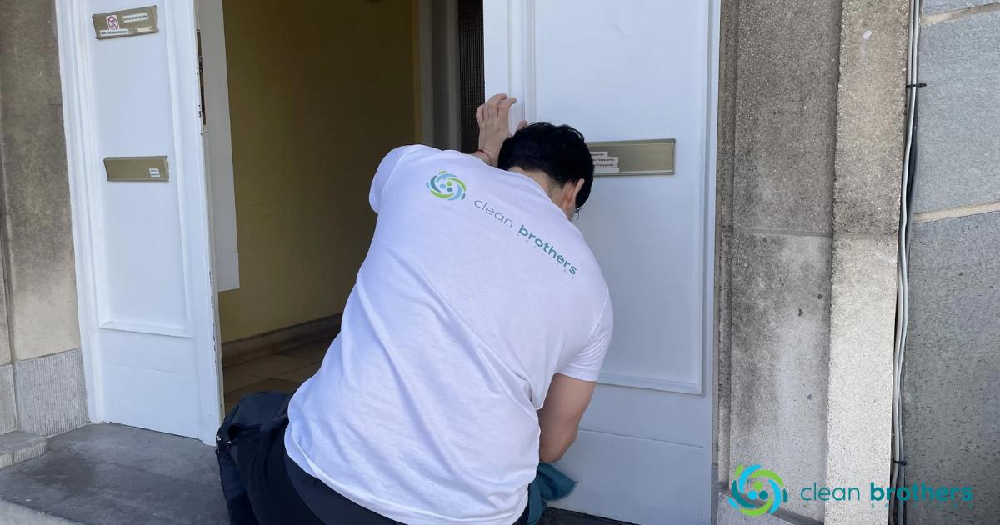

Lavage de vitres
Des surfaces vitrées nettes, lumineuses et sans traces.
Nous assurons des prestations soignées et régulières pour maintenir vos espaces propres, accueillants et fonctionnels à Bruxelles et dans le Brabant wallon.

Des surfaces vitrées nettes, lumineuses et sans traces.
Un environnement de travail propre et agréable pour vos équipes et vos visiteurs.
Une présentation impeccable pour renforcer votre image de marque.
Entretien régulier des halls, couloirs, escaliers et zones partagées.
Interventions adaptées aux environnements professionnels et techniques.
Chaque mission est préparée avec soin pour assurer un résultat fiable, rapide et professionnel.
Expliquez votre besoin en quelques lignes et joignez une photo si nécessaire depuis la page contact.
Accéder au formulaire